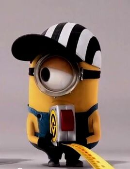

The Minions are small, yellow, cylindrical creatures, who have one or two eyes. They are the signature characters of the Despicable Me series. They bring much of the comedy in the film, and they are known as the scene-stealer of the movie. Frequently, they speak in an incomprehensible language, called Minionese, occasionally switching to English. They are much childish in some ways, yet they seem to be very intelligent in certain aspects. All the minions are minor characters in Minions (with the exception of Kevin, Stuart, and Bob), major character in Despicable Me and Despicable Me 2 and supporting characters in Despicable Me 3 (with the exception of Mel).
They are impulsive creatures with little self-control, but with a wide-eyed wonder and odd innocence that endears them to viewers and makes them relatable. They can be pesky when they are doing weird interactions with other people, animals, or objects; they are also famous for their gibberish-speaking language. Minions have standard English names.
Unlike most other criminal masterminds and their usual doctrine of abusing their henchmen, Gru gets along famously with the minions. He genuinely seems to like them and shows appreciation for their hard work and support, only having to be strict with them very few times. He even seems to know each of them by name.
| Names | Bob | Carl | Dave | Jerry | John | Kevin | Mark | Phil | Stuart | Tim |
| Apperence |  |
 |  |